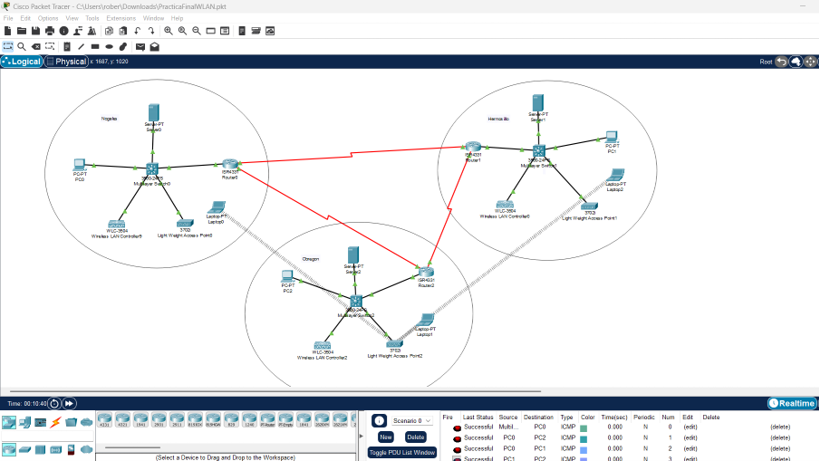
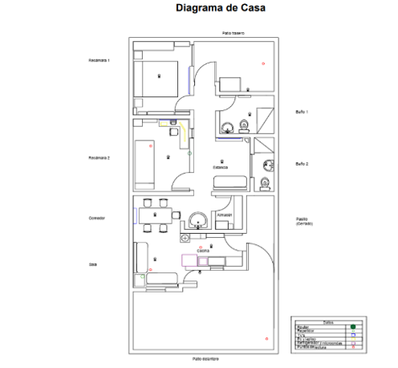
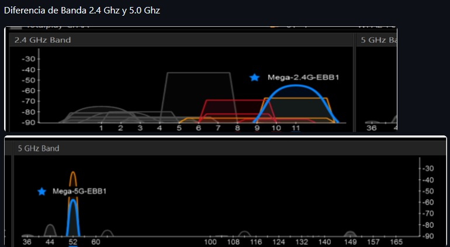

Sobre mí
Pues yo tengo 20 años, me gustan los deportes, practicar instrumentos (especialmente bateria).
Me gusta todo lo relacionado con sonido y tecnologia.
Educación
Ingeniería en Sistemas de Información
Tengo Carrera Tecnica en Programacion de la Preparatoria (CBTIS 206).
Habilidades
Tecnologías que mejor manejo
- Base de Datos
- Python
- Interfaces
- Figma
Habilidades sociales
- Trabajo en equipo
- Conocimiento de Tecnologia
- Solucion de problemas
Proyectos
Inventario
Es un Sistema de Inventario que contaba con una BD, el cual mandaba los datos de la BD a una tabla y la tabla formaba parte de mi interfaz.
Ver repositorio en GitHubSistema de monitoreo
Desarrolle un Sistema de monitoreo, el cual este conformado de dos programas uno de cliente y el otro de servidor, y pueda graficar 3 puntos aleatorios simulado y con Arduino vía serial.
Ver repositorio en GitHubWhile Final
Este programa se ejecuta en consola y te muestra un menú con distintas opciones, esas opciones fueron temas vistos en clase.
Ver repositorio en GitHubAPI Códigos Postales
Desarrollamos un API en PHP, el pueda mostrar los códigos postales de nuestra BD, y se muestren en pantalla en localhost activando los servicios de MYSQL.
Ver repositorio en GitHubBlog
Proyectos que no se pueden subir a un repositorio. Abre cada uno para leerlo.
Implementación de una red WAN en diferentes estados
Descripción
Diseñé una red con 3 sedes en estados diferentes (Hermosillo, Obregón y Nogales). Cada sede tiene su propia red local, PC, servidor, router y un dispositivo, y los 3 routers se enlazan entre sí.
Requerimientos del cliente
Que las computadoras de las tres sedes pudieran comunicarse entre sí y que los dispositivos se conecten al access point
¿Cómo se diseñó la solución?
Armé un diseño en Packet Tracer con un router por sede. y los componentes que necesitaba cada sede, cables y la IP para conectarse a otros estados
¿Cómo se implementó la solución?
Primero configuramos la ip, accedemos a nuestro pc, entramos a configurarlo seguridad y conexiones, lo hacemos en todas los estados, y hacemos ping si funciona todo
¿Cuál fue el resultado?
Pings regresados de manera correcta y los dispositivos recibian señal
Capturas

Análisis de redes
Descripción
Proyecto en equipo donde analizamos el espectro de la red en distintos puntos de la casa para identificar redes vecinas, el uso de canales y la diferencia entre la banda de 2.4 GHz y la de 5 GHz.
Requerimientos del cliente
Comparacion de redes 2.4 y 5.0 GHZ, Distintos puntos de la red en el local y los puntos donde habia mas señal
¿Cómo se diseñó la solución?
Analizamos que es importante tomar nota de la señal y como se maneja la aplicacion para realizar la practica correctamente
¿Cómo se implementó la solución?
Seccionamos primero hacer los diseños y luego la parte practica
¿Cuál fue el resultado?
Obtuvimos todos los datos de nuestra red, en cuanto analisis, diseño y practica
Capturas

